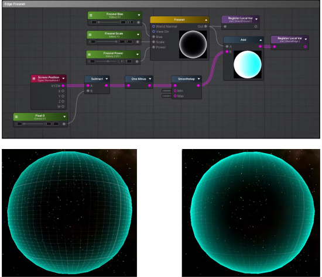
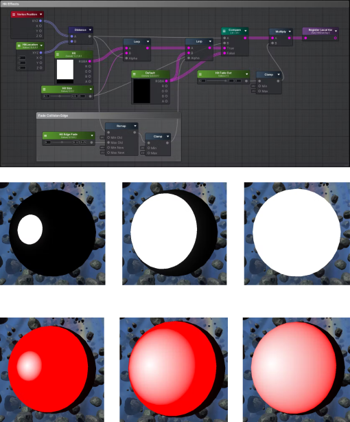
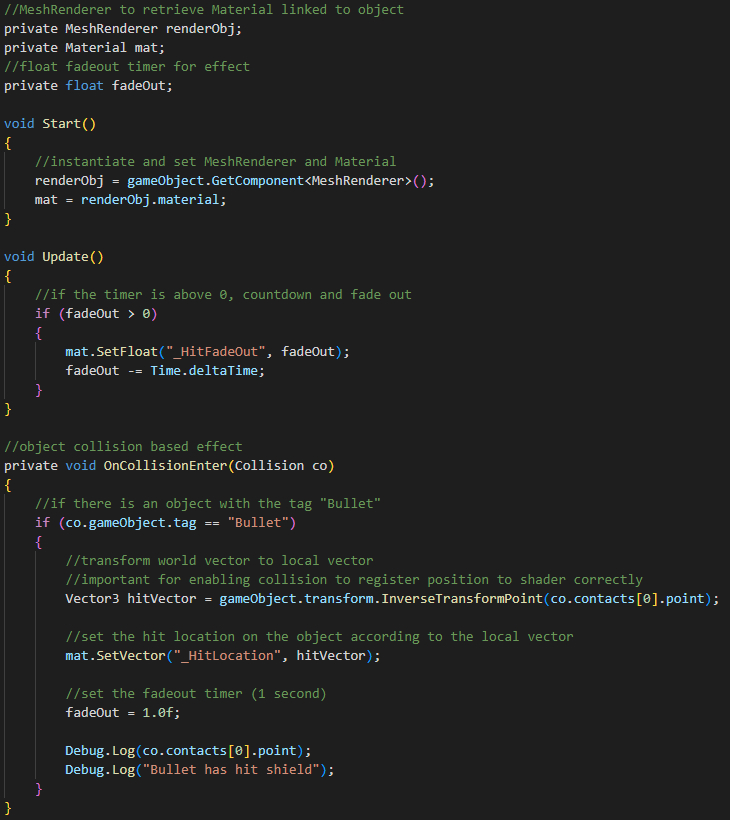
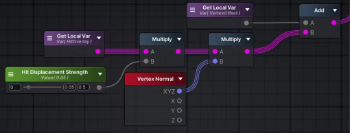
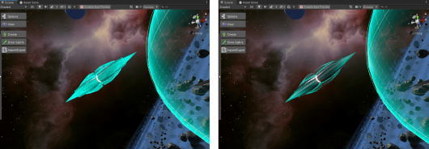
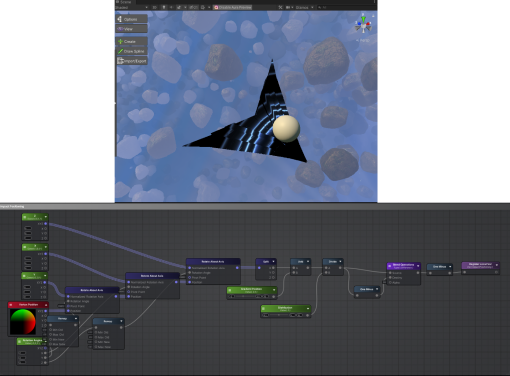

Shield Shader
Skills
Unity, Amplify Shader Editor
Time
May 2022 - June 2022
XR Immersive Tech Internship
Contributions
Learned to use Unity and Amplify Shader Editor to create a reactive shield shader.
Context
//01As a technical artist, the first tool I was tasked with creating was a shield shader that could be applied to any mesh. The shader would react according to any bullet object that hits the mesh. Dependig on the location of the impact, the shader will visually ripple outwards and glow to show that the shield has been hit.
Within the UNCONTAINED project, we used Unity and the Amplify Shader Graph (ASG) plugin for many shaders because it allows us to utilise node-based shaders rather than code. At the time of starting, I had no prior knowledge of how to use Unity, much less ASG. However, I had some experience with Blender's material nodes, Cinema4D's XPresso editor, and generative coding in Processing, so I had some rough ideas about how to approach the task.
Process
//02Starting with a basic spherical mesh, I created a simple shader that utilises Fresnel and Screen Position Edge nodes to fade off towards the centre and appear more vividly around the edges. The visuals can be tweaked through the material using exposed property values. I also added an animated grid that moves vertically along the mesh.
The next step was figuring out how to make the visual impact. I started with simple black and white values (0-1), as this could be adapted for use as a multiplier for sprite image strengths or displacement values. The basic idea behind this is to get the location of the hit on the mesh and then compare it with the surrounding UV or vertex positions to see if they are within a certain distance of the Hit Location. I created a script that takes Unity's InverseTransformPoint function to convert the world vector (position according to the whole world) of the collision to a local vector (position according to the mesh/game object) that is then passed through into the shader's property.
Additionally, I added in a fading edge gradient that can be controlled so the impact gradually fades off to the centre. The above three images use a mid-high value for the Hit Size and show the difference between how the edge fading can be tweaked. This is also a timed effect controlled through the script, so that the impact will fade after a certain time.
I consulted my colleague, Lawrence Yip, for help with the collision tags. As the project was already fleshed out, certain game objects were linked to different tags/layers, and some of these did not interact with each other. By making sure that the shield object and the bullet object were on layers that were interactable, I was able to get the collisions to work.
The next step was to add some displacement to the mesh at the hit location. Because I used 0-1 values for the visuals, I was able to simply multiply the hit effect I made earlier with a controllable displacement strength to make it seem as if the impact had physically distorted the mesh.

At this point, the shader was mostly done, but to extend the usefulness of the mesh, I was asked to adapt it for more complex meshes and to allow for sprite sheets or textures to be used rather than a simple sphere.
I received help from another colleague, Stefan Bloedorn, in getting the images to correctly display according to the UV mapped meshes. This works by rotating the texture node's UV positioning according to the vertex position of the Hit Location, effectively enabling the effect to work on complex meshes and UVs.
Reflection
//03Throughout the making of the shield shader, I learnt the basics of how to use Unity and delved into the more complex creation of a shader tool. One thing I kept in mind while creating the shader was how a game artist or developer might want to customise the shader. This led me to use float controls to easily iterate and modify the shader according to different needs and stylistic choices, and to make these options readily available through the material using exposed property values.
I stretched my skills through the various layers of creating the shield shader, from the basic visuals to the collision impact positioning, timed effects, and displacement. By implementing various skillsets, from programming to node-based development, and through continual iteration, I managed to create a working shield shader.
Additionally, I learnt some workflow management and organisation skills as textures, shaders, materials, meshes, and so forth followed naming conventions and were sorted into folders. This made it easy to find previous examples in the project that I occasionally referenced to get some inspiration on how to tackle the shader.